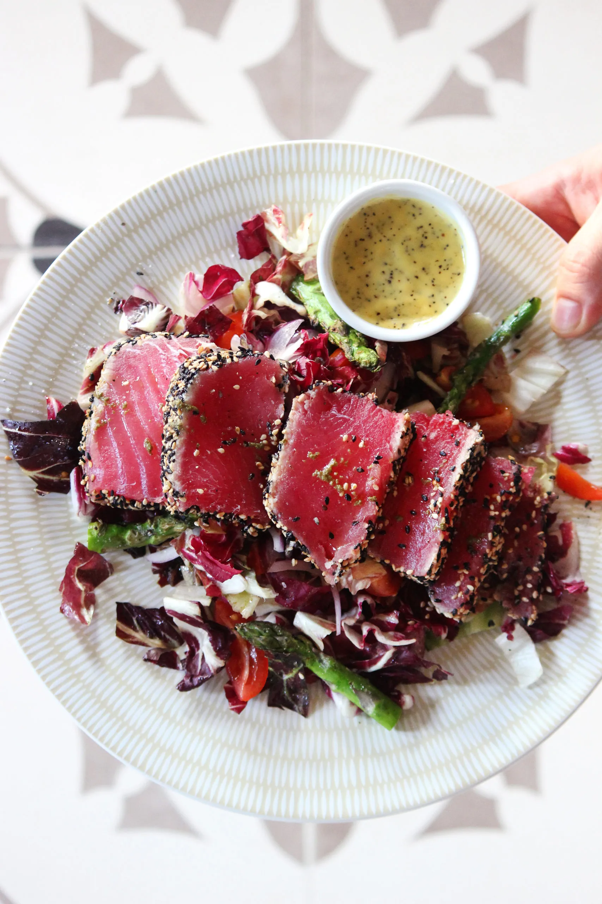
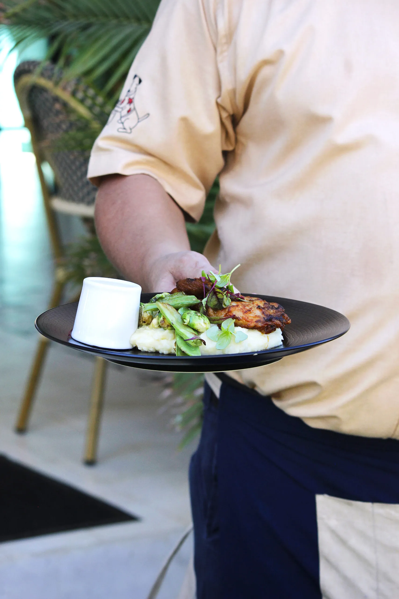
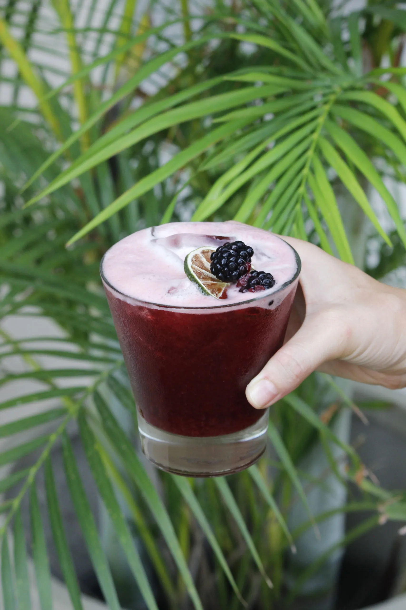
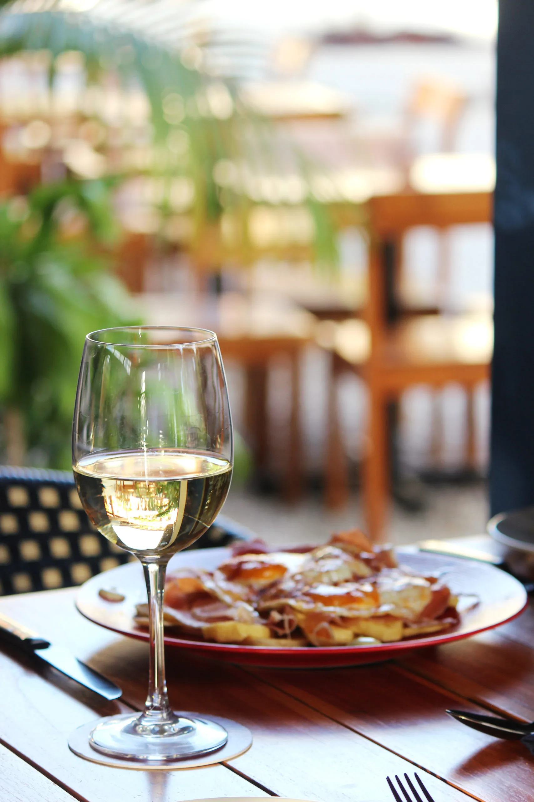

Tapas & Bar
Welcome to Pascual,
a special place for creating memories.
A Spanish gastronomical experience in Las Catalinas, Guanacaste.
See our menu
About Pascual
A place where tradition, flavors & good company come together.
Pascual is a place to celebrate life with friends and family, with tapas, cañas and special drinks.
We believe food brings us together, takes us to special places and creates memories that stay with us forever.


